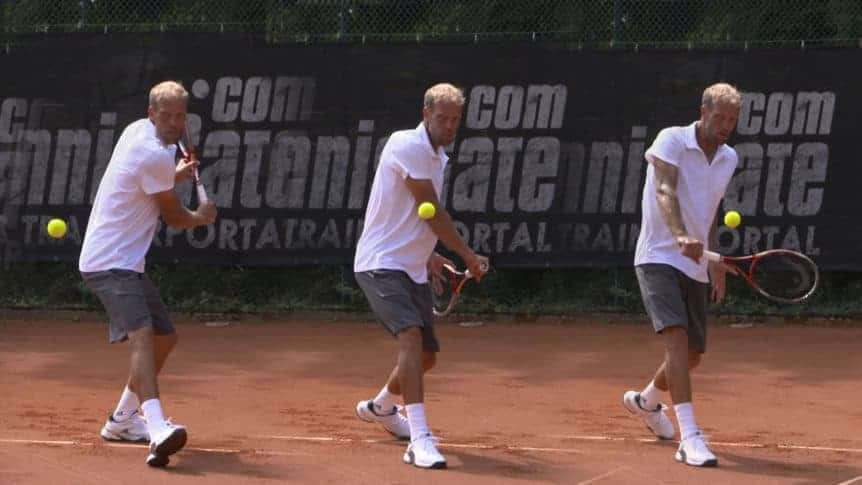
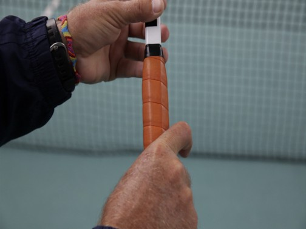
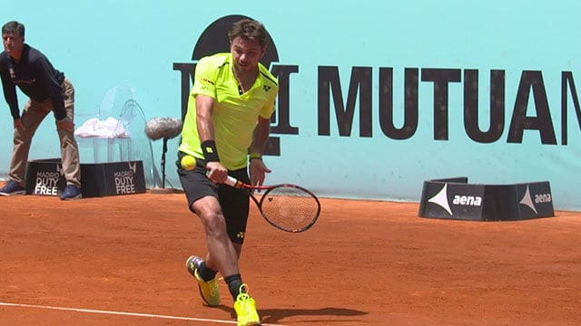
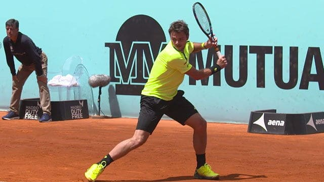
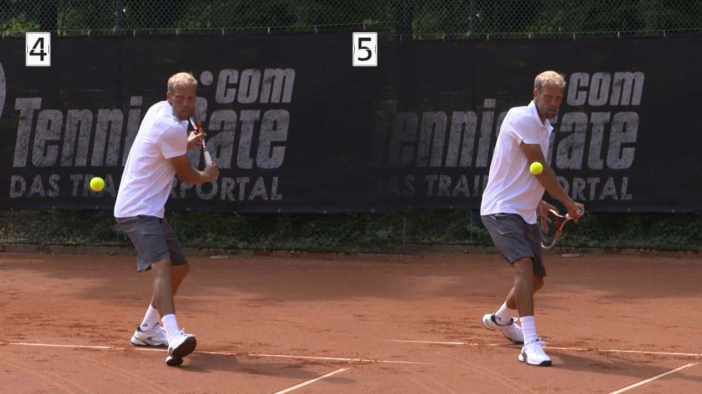
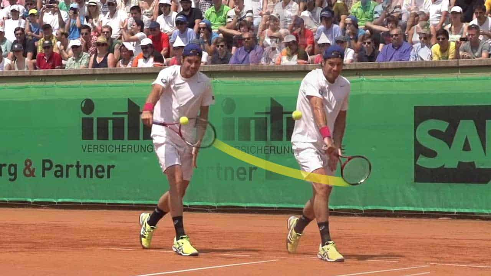
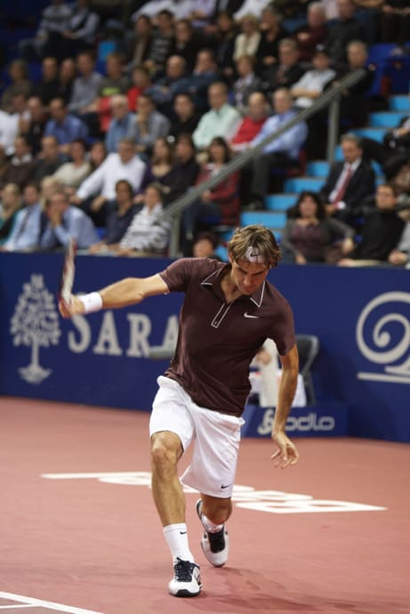
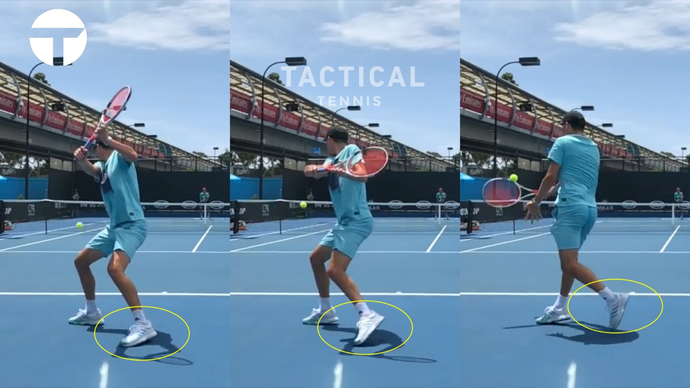

Cú Trái Tay Một Tay (One-Handed Backhand)
Cẩm nang toàn diện về Cú Trái Tay Một Tay - kỹ thuật chuẩn, mẹo từ huấn luyện viên chuyên nghiệp và các lỗi phổ biến của cú đánh kinh điển này. Phân tích chi tiết cách cầm vợt, thế đứng, pha mở vợt ra sau, pha hạ đầu vợt, điểm tiếp xúc bóng, pha vung vợt theo đà, vai trò ổn định của tay không thuận, cơ chế tạo xoáy cuộn (topspin), lỗi gập cong cánh tay và giải mã lầm tưởng về việc phát lực từ chân sau qua phân tích kỹ thuật của Wawrinka và Thiem.
Nguồn: "One-Handed Backhand .docx" - cẩm nang chuyên sâu tổng hợp từ nhiều nguồn huấn luyện quần vợt quốc tế uy tín về kỹ thuật trái tay một tay cổ điển.
Cẩm Nang Kỹ Thuật Trái Tay Một Tay: Đánh Bóng Đúng Kỹ Thuật, Mẹo Chuyên Nghiệp & Các Lỗi Thường Gặp
Trong thập kỷ qua, chúng ta đã chứng kiến sự trỗi dậy mạnh mẽ của cú trái tay một tay ở đỉnh cao quần vợt thế giới, chứng minh rằng một cú trái tay một tay xuất sắc hoàn toàn có thể hiệu quả ngang bằng, thậm chí vượt trội hơn cú trái hai tay. Mục tiêu của cẩm nang này là giúp bạn thấu hiểu sâu sắc và nâng tầm cú trái tay một tay của mình lên một đẳng cấp mới.
Chúng ta sẽ cùng khám phá các chủ đề cốt lõi sau: Kỹ thuật & Nền tảng cú trái tay một tay topspin; Mẹo chuyên nghiệp để hoàn thiện cú đánh; Các lỗi phổ biến nhất và cách khắc phục.

KỸ THUẬT & NỀN TẢNG CÚ TRÁI TAY MỘT TAY TOPSPIN
Lý do cú trái tay một tay tạo xoáy topspin rất thách thức để thuần thục là vì nó đòi hỏi cảm giác thời điểm (timing) hoàn hảo và cơ chế phát lực cực kỳ chính xác. Với cú trái hai tay, bạn có tay không thuận hỗ trợ điều chỉnh khi vào bóng muộn hoặc khi lệch điểm tiếp xúc lý tưởng; nhưng với cú trái một tay, bạn không có được sự trợ giúp đó. Khả năng phán đoán, cảm giác nhịp điệu và bộ chân của bạn phải thật chuẩn xác. Chuỗi chuyển động sau sẽ giúp bạn hình dung rõ ràng cơ chế của một cú đánh vững chắc.
Cú trái tay một tay trong thế đứng đóng (closed stance): Sau khi đã quan sát các phân đoạn chuyển động, hãy cùng phân tích chi tiết cách cầm vợt, kỹ thuật và các yếu tố cơ bản của cú đánh chạm đất này.
CÁCH CẦM VỢT CHO CÚ TRÁI TAY MỘT TAY
Một trong những sai lầm phổ biến nhất ở cú trái tay một tay topspin là cố gắng đánh bóng với kiểu cầm vợt sai. Trừ khi bạn cầm vợt theo kiểu Eastern trái tay (Eastern backhand grip), bạn sẽ luôn gặp khó khăn trong việc kiểm soát mặt vợt và tạo lực. Những năm gần đây, một số tay vợt chuyên nghiệp xoay mặt vợt nhiều hơn sang kiểu Western trái tay, tuy nhiên đối với phần lớn người chơi, kiểu cầm vợt Eastern trái tay vẫn là lựa chọn tối ưu nhất. Với kiểu cầm này, khớp gốc ngón trỏ của bạn sẽ nằm ở cạnh trên cùng của cán vợt (Cạnh số 1) như hình minh họa.

BỘ CHÂN & THẾ ĐỨNG (FOOTWORK & STANCE)
Bộ chân trong cú trái tay một tay có sự khác biệt rõ rệt so với cú thuận tay hay cú trái hai tay (vốn có thể đánh dễ dàng từ thế đứng mở open stance). Với cú trái tay một tay, thế đứng ưu tiên hàng đầu là thế đứng đóng (closed stance), trong đó người chơi bước chân trước chéo nhẹ qua thân để đón đánh bóng. Dưới đây là hình ảnh ví dụ:

PHA MỞ VỢT RA SAU (THE BACKSWING)
Điểm cốt tử là phải đưa vợt ra sau bằng cách xoay toàn bộ cơ thể như một khối thống nhất (unit turn), tuyệt đối không chỉ kéo bằng cánh tay. Lý tưởng nhất, bạn mở vợt ra sau đồng thời giữ tay không thuận ở cổ vợt, cánh tay đánh bóng giữ tương đối thẳng và đầu vợt hướng chếch lên trên.

PHA HẠ ĐẦU VỢT (RACQUET DROP) CUỐI BACKSWING
Từ vị trí vai xoay cao ban đầu, bạn phải hạ đầu vợt xuống thấp hơn quỹ đạo bay của bóng ở cuối pha backswing, tạo điều kiện để vung vợt từ dưới lên trên và xuyên qua bóng. Như hình minh họa dưới đây, đầu vợt chúc xuống dưới trước khi bắt đầu vung về phía trước. Cánh tay đánh bóng duy trì độ thẳng ổn định.

PHA VUNG VỢT VỀ TRƯỚC VÀ ĐIỂM TIẾP XÚC BÓNG
Để tạo xoáy topspin cho cú trái tay một tay, vợt phải vung theo quỹ đạo chếch lên từ thấp lên cao (low-to-high). Điểm tiếp xúc bóng nằm ở phía trước bàn chân trước, trong khi hai vai vẫn giữ góc nghiêng ngang (sideways) so với lưới. Mặt vợt tại thời điểm va chạm phải vuông góc và song song với mặt lưới. Minh họa dưới đây giúp làm rõ vị trí tiếp xúc bóng lý tưởng.

PHA VUNG VỢT THEO ĐÀ VÀ KẾT THÚC (FOLLOW-THROUGH)
Sau khi tiếp xúc bóng, đầu vợt duy trì sự ổn định và tiếp tục di chuyển hướng lên trên và về phía trước như thể đang "đẩy" trái bóng đi. Đầu vợt tiếp tục vươn cao và vòng qua khi cơ thể hoàn tất chu trình xoay. Cánh tay giữ thẳng. Cú đánh kết thúc ở phía đối diện của cơ thể với đầu vợt hướng thẳng lên trời — giống như tư thế vung vợt kết thúc kinh điển của Roger Federer.

MẸO CHUYÊN NGHIỆP ĐỂ HOÀN THIỆN CÚ TRÁI MỘT TAY
Nếu bạn đã nắm vững các bước kỹ thuật căn bản, việc tập trung vào những bí quyết chuyên sâu dưới đây sẽ giúp bạn nâng tầm uy lực và độ ổn định của cú đánh.
VAI TRÒ CỦA TAY KHÔNG THUẬN TRONG VIỆC CÂN BẰNG CÚ ĐÁNH
Một yếu tố cực kỳ then chốt trong cú trái tay một tay là vai trò của cánh tay không thuận trong suốt chu trình vung vợt nhằm giữ thăng bằng cơ thể. Thông thường, tay không thuận hỗ trợ đưa vợt ra sau, và khi tay thuận vung về phía trước để đánh bóng, tay không thuận sẽ bung ngược về phía sau theo hướng đối nghịch, hoạt động như một đối trọng hoàn hảo để hãm thân trên không bị xoay sớm.
CÁCH TĂNG ĐỘ XOÁY TOPSPIN CHO CÚ TRÁI TAY MỘT TAY
Ở giai đoạn này, cần đặc biệt lưu ý đến vai trò của cẳng tay khi vung vợt. Cánh tay đánh bóng giữ tương đối thẳng, tuy nhiên cẳng tay sẽ xoay nhẹ khi tiếp cận bóng. Chuyển động này giúp gia tốc đầu vợt cực nhanh và tạo ra lượng vòng xoáy cuộn khổng lồ lên trái banh.
Sau khi đã nắm rõ cấu trúc cơ bản của một cú trái tay một tay vững chắc, hãy cùng phân tích các lỗi sai phổ biến mà người chơi thường mắc phải.
CÁC LỖI THƯỜNG GẶP TRÊN CÚ TRÁI TAY MỘT TAY TOPSPIN
Phần dưới đây sẽ giúp bạn thấu hiểu nguyên nhân và cách sửa chữa những sai sót phổ biến nhất.
LỖI GẬP CONG CÁNH TAY KHI ĐÁNH
Như đã phân tích, người chơi cần duy trì cánh tay đánh bóng tương đối thẳng xuyên suốt cú đánh, bắt đầu ngay từ pha chuẩn bị. Việc gập khuỷu tay ở pha mở vợt, gập tay để "chữa cháy" khi tiếp xúc bóng sai vị trí, hoặc gập tay khi kết thúc sẽ làm mất đòn bẩy động học và khiến đường bóng thiếu ổn định trầm trọng. Giữ thẳng khuỷu tay là chìa khóa để duy trì bán kính xoay cố định và truyền lực tối đa.
LỖI XOAY THÂN NGƯỜI QUÁ SỚM
Đây được xem là lỗi phổ biến nhất ở những người chơi trái tay một tay. Khác với cú thuận tay (nơi người chơi xoay hông và ngực hướng về phía lưới khi tiếp xúc bóng), điểm tiếp xúc ở cú trái tay một tay diễn ra khi thân người vẫn đang ở tư thế đứng nghiêng (sideways). Cú đánh bắt đầu bằng việc chuyển trọng tâm vào bóng, nhưng phần thân trên phải được hãm lại để giải phóng cánh tay vung xuyên qua bóng.
Cách tốt nhất để tự hoàn thiện là hãy tự quay video cú đánh của mình, sau đó đối chiếu chuyển động của bạn với các mốc vị trí chuẩn để căn chỉnh chính xác từng phân đoạn.
Phần 1: Nguồn Gốc Sức Mạnh Trong Cú Trái Tay Một Tay
Phân Tích Cơ Sinh Học Của Chuyên Gia Glen Hill
Dù cú trái tay một tay thường được ca ngợi bởi vẻ đẹp thanh thoát và tính nghệ thuật trên sân tennis, lý do duy nhất khiến nó trường tồn ở đẳng cấp cao nhất của quần vợt chuyên nghiệp rất đơn giản: nó cực kỳ hiệu quả. Cú trái tay một tay có khả năng đạt tới mức vận tốc đầu vợt và vòng xoáy cực đại cao hơn cú trái hai tay. Điều này không có nghĩa là nó vượt trội ở mọi khía cạnh, nhưng về trần phát lực tối đa, đây là sự thật không thể phủ nhận.
Các cú đánh cuối sân hiện đại đều vận hành theo cơ chế xoay (rotational mechanics), và lượng động năng truyền vào quả bóng bị giới hạn bởi tốc độ đầu vợt tại thời điểm va chạm. Khi nói về "sức mạnh" của cú đánh, thực chất chúng ta đang nói về tốc độ đầu vợt (racquet head speed). Có rất nhiều quan niệm sai lầm về nguồn gốc sức mạnh trong các cú đánh tennis hiện đại, và lầm tưởng phổ biến nhất chính là ý niệm cho rằng sức mạnh đến từ "chân sau" (back leg).
Học thuyết "nén lực chân sau và bộc phát" (load and explode) đã lan truyền rộng rãi trong giới huấn luyện viên và học viên suốt nhiều năm qua. Tuy nhiên, vấn đề là cơ chế này không phải là nguồn phát lực thực sự hiệu quả. Đó hoàn toàn không phải là những gì các tay vợt đẳng cấp hàng đầu thế giới thực hiện khi thi đấu. Chúng ta có thể chứng thực điều này qua việc giải phẫu kỹ thuật của hai tay vợt sở hữu cú trái một tay uy lực nhất kỷ nguyên hiện đại: Dominic Thiem và Stanislas Wawrinka.
Bằng cách quan sát mô thức vận động của chân và khung hông trong suốt quá trình đánh bóng, chúng ta sẽ thấy rằng chân sau hoàn toàn không phải là nguồn phát lực chính đẩy khung hông xoay vào bóng. Đầu tiên, hãy cùng phân tích cú trái tay hủy diệt của Stan Wawrinka — người nổi danh với khả năng đấu sòng phẳng từ vạch cuối sân với cú thuận tay cực nặng của Rafael Nadal để giành 3 danh hiệu Grand Slam danh giá. Vậy thực tế Stan đã làm gì?
Phân Tích Kỹ Thuật Chân Của Stanislas Wawrinka
Hãy bắt đầu bằng việc quan sát chân sau của Wawrinka trong các giai đoạn bộc phát lực. Hãy nhớ rằng quan niệm truyền thống cho rằng người chơi phải đạp mạnh từ chân sau để tạo lực xoay hông. Nhưng khi nhìn vào khung hình, tại thời điểm chuẩn bị tăng tốc đầu vợt, chân trái (chân sau) của Stan gần như duỗi thẳng và chỉ có một phần nhỏ mũi chân tiếp xúc với mặt sân — hoàn toàn không ở vị trí sẵn sàng để phát lực đạp đất.
Khi chuyển sang giai đoạn tiếp theo, chân trái của anh ấy càng tiếp xúc ít hơn với mặt sân, mép ngoài bàn chân nhấc hẳn lên. Không có bất kỳ dấu hiệu nào cho thấy Wawrinka đang dùng chân sau làm điểm tựa phát lực để xoay hông hay gia tốc cây vợt. Thay vào đó, toàn bộ trọng lượng cơ thể của anh ấy đã chuyển gần như hoàn toàn sang chân trước (chân phải) TRƯỚC KHI pha tăng tốc thực sự của cây vợt bắt đầu.
Nếu mục đích là đạp chân sau để lấy lực, Wawrinka sẽ phải dồn phần lớn trọng lượng vào chân sau — nhưng thực tế trọng tâm đã nằm trọn vẹn ở chân trước. Khi Wawrinka hoàn tất pha tăng tốc xuyên qua bóng, cấu trúc hông xoay đưa hông trái về phía trước, nhưng chân trái lại vung ngược ra phía sau — chuyển động theo hướng ngược lại hoàn toàn so với hông trái!
Nếu Wawrinka dùng chân trái để đẩy hông trái tiến lên, chân và hông phải chuyển động cùng chiều. Bạn có thể tự kiểm chứng ngay: đứng dậy và đẩy hông trái về trước bằng chân trái, đồng thời cố gắng đưa chân trái ra sau — cơ học cơ thể đơn giản là không thể hoạt động theo cách đó.
Phân Tích Cơ Chế Phát Lực Của Dominic Thiem
Chuyển sang phân tích cơ sinh học của Dominic Thiem, chúng ta lại chứng kiến một mô thức vận động y hệt: Thiem không hề đạp từ chân sau để đẩy hông sau vào cú đánh. Hãy nhìn tiến trình đặt chân của anh ấy qua chuỗi hình ảnh phân tích. Bàn chân sau chỉ đóng vai trò giữ thăng bằng và tự do xoay theo quán tính.
Thêm vào đó, trong khi hông sau (bên trái) của Thiem xoay vòng về phía trước bên trái, thì bàn chân sau của anh ấy lại xoay theo hướng ngược lại, sang bên phải. Điều này một lần nữa tái khẳng định: chân sau không hề đẩy hông tiến tới.

Tại Sao Đạp Chân Sau Lại Không Hiệu Quả?
Khi đã thấy rõ những cú trái một tay uy lực nhất thế giới không hề đẩy lực từ chân sau, chúng ta cần đặt câu hỏi: "Tại sao lại như vậy?". Câu trả lời cơ học rất rõ ràng: việc cố tình đạp chân sau để tạo lực xoay khung hông là một phương pháp rất kém hiệu quả. So với các cơ chế tạo đà xoay trục khác, đạp chân sau khiến tốc độ xoay hông bị chậm — và hông xoay chậm đồng nghĩa với đầu vợt tăng tốc chậm.
Đâu Là Nguồn Phát Lực Thực Sự?
Nếu lực xoay trong những cú trái một tay đỉnh cao không đến từ chân sau, thì điều gì tạo nên tốc độ xoay khủng khiếp đó? Có những cơ chế sinh cơ học tối ưu hơn rất nhiều để kích hoạt chuyển động xoay nhanh của cấu trúc khung hông và chuỗi động lực học, và đó chính là nội dung chuyên sâu sẽ được phân tích trong Phần 2. *(Hình ảnh trích xuất từ tư liệu phân tích chuyển động chậm của Slow Motion Tennis và Pro Tennis Photos)*.